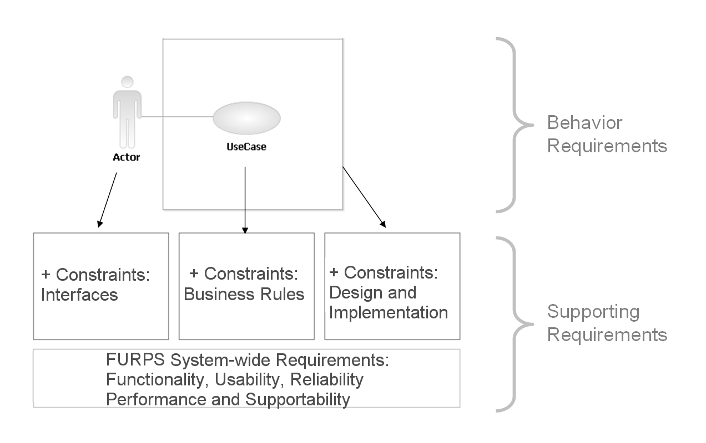

| Artifact: Supporting Requirements |
 |
|
| Roles | Responsible: | Modified By: |
|---|---|---|
| Tasks | Input To:
| Output From: |
| Main Description | Supporting Requirements and Use Cases, together, define the system requirements. Use Cases describe the behavioral requirements for the system, and Supporting Requirements describe system-wide requirements that are not captured in Use Case Specifications. Making this distinction simplifies maintenance. Supporting Requirements may be categorized according to the FURPS+ model (Functionality, Usability, Reliability, Performance, Supportability + Constraints). For more information on this classification, see Concept: Supporting Requirements. The figure that follows illustrates the relationship among the Supporting Requirements, Use Case Specifications, and Actors.  |
|---|
| Templates |
|---|
| Impact of not having | The goal of this work product is to make sure that all types of requirements are covered, which reduces the risk of not considering some important facet of the system. FURPS+ requirements are system-wide, and they influence the Architectural Mechanisms that you will create, thus guiding development of the system's foundation. These requirements are frequently the major cost item, because they determine architectural choices. Furthermore, if you do not capture system-wide requirements in a central location, but repeat them throughout the Use Cases, the result will be more maintenance and more chance for error. |
|---|---|
| Representation Options | This work product does not imply using only one document to capture all requirement types. To manage the communication of the information, it makes more sense to separate the information into separate documents or to use the Work Items List. The following are recommendation and options for representing the Supporting Requirements: Option: Use the Work Items ListConsider capturing Supporting Requirements in the Artifact: Work Items List, which you can use for prioritizing and managing requirements. If Stakeholders are comfortable with it, or with accessing a report automatically generated from it, then you do not need a separate document. Option: Include as Part of the Vision DocumentConsider including some types of Supporting Requirements in Artifact: Vision. To keep the Vision stable, follow this option for the requirements types that need less refinement, such as Product Qualities, Documentation, or Compliance. Recommendation: Use the Supporting Requirements Specification TemplateTemplate: Supporting Requirements Specification provides a tool to capture, structure, and organize the supporting requirements. Even in a small project, a requirements management tool, a database, or a spreadsheet, are recommended for prioritizing and managing requirements. If Stakeholders are comfortable with accessing requirements directly from that tool or with accessing a report automatically generated from the tool, you will not need a separate document. |
| Checklists | |
|---|---|
| Concepts | |
| Guidelines |
This program and the accompanying materials are made available under the View copyright information here: OpenUP Copyright |